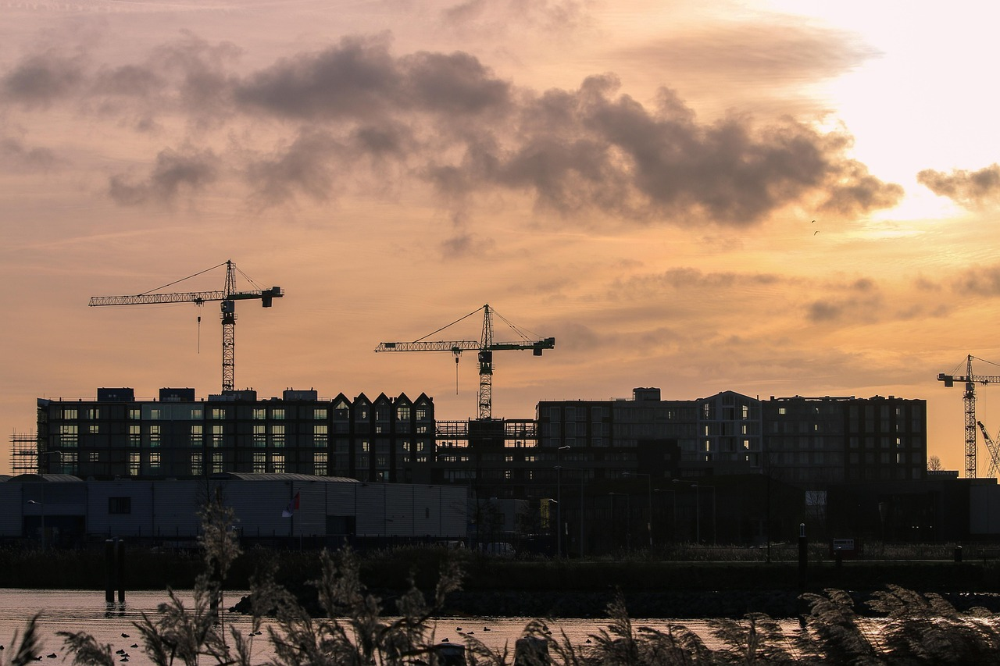

Pružamo kompletan inženjerski servis od idejnog koncepta do izvođenja — projektiranje novih i sanacija postojećih konstrukcija, stručni nadzor i vođenje projekata.
Zatražite ponudu →
Svaki projekt tretiramo individualno — od prvog razgovora do tehničkog pregleda gotove građevine.
Izrada glavnih i izvedbenih projekata armiranobetonskih konstrukcija za obiteljske kuće, stambene i poslovne objekte. Obuhvaća statički proračun, proračun armature i kompletnu tehničku dokumentaciju prema Eurokod standardima.
Projektiranje statičkih sanacija, ojačanja i rekonstrukcija postojećih objekata. Posebno iskustvo u radu s povijesnim građevinama, kamenim zidovima i starim kućama dalmatinskog primorja.
Projektiranje ojačanja konstrukcija modernim kompozitnim sustavima — FRCM (Fabric Reinforced Cementitious Matrix) i FRP (Fibre Reinforced Polymer). Idealno za sanaciju zidanih i kamenih konstrukcija bez narušavanja izvornog izgleda.
Iskustvo u projektiranju obnove starih kamenih kuća, povijesnih jezgri i tradicionalnih dalmatinskih objekata. Spoj tradicije i suvremene inženjerske struke — uz poštivanje zahtjeva konzervatorskih smjernica.
Projektiranje lakih i teških čeličnih konstrukcija — nadstrešnice, hale, stepeništa, ograde i industrijski objekti. Izrada projekata privremenih skela i podupiranja za potrebe gradilišta.
Obavljanje stručnog nadzora građenja kao ovlašteni inženjer — praćenje izvođenja radova, usklađenost s projektnom dokumentacijom i zakonskim propisima. Vođenje projekata obiteljskih kuća i rekonstrukcija.
Transparentan i jednostavan proces — od prvog kontakta do završnog projekta.
Besplatna inicijalna konzultacija — razgovaramo o vašem projektu, potrebama i rokovima.
Dostavljamo jasnu ponudu s opsegom rada, rokom izrade i cijenom bez skrivenih troškova.
Proračun, nacrti i tehnička dokumentacija prema važećim propisima i Eurokod standardima.
Predaja kompletne dokumentacije uz tehničku podršku kroz izvođenje radova.
Kontaktirajte nas za besplatnu konzultaciju. Odgovaramo u roku 24 sata.
Kontaktirajte nas →